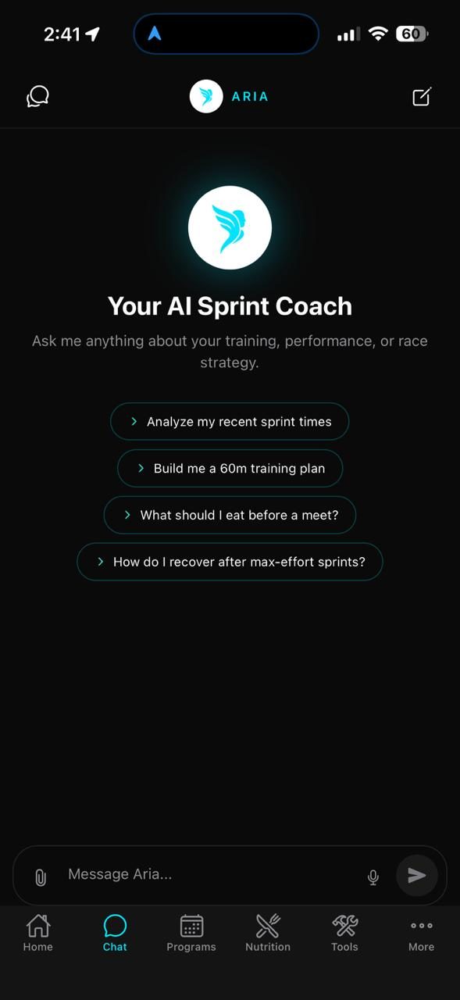

Official User Guide
Aria
AI That Trains With You
Your complete guide to training smarter, recovering better, and performing at your peak — powered by AI and your personal data.
runwitharia.com
Official User Guide
AI That Trains With You
Your complete guide to training smarter, recovering better, and performing at your peak — powered by AI and your personal data.
runwitharia.com
User Guide — 14 Sections
Welcome to Aria — the AI coaching companion built specifically for sprint athletes. Aria learns from your wearable data, training history, and goals to give you personalized coaching that actually matches your body's readiness on any given day.
Download the Aria app and sign up. Your username (e.g. antonyrugama) becomes your athlete identity inside the platform.
Head to More → Athlete Profile and fill in your height, weight, body fat %, sleep hours, injury status, training days per week, and training focus (Speed, Strength, Power, Endurance). This powers Aria's recommendations from day one.
Go to More → Health Integrations and connect Apple Health, Samsung Health, Strava, or Garmin. This gives Aria access to your heart rate, HRV, sleep, and step data — the foundation of your daily readiness score.
In More → Upcoming Events, add your next competition or race. Aria uses your event date and goal time to calibrate training urgency and taper timing.
Visit More → AI Coaching Style and pick how you want Aria to communicate: Motivational, Technical, Balanced, or Minimal.
The Home screen is your daily dashboard. Each morning it greets you with a time-aware message and a snapshot of your body and training status.
Your overall readiness from 0–100, calculated from wearable data. 80+ means you're primed for high-intensity work.
Your resting heart rate trend. A declining RHR over days is a strong recovery signal.
Heart Rate Variability in milliseconds. Higher and rising HRV indicates CNS recovery and readiness.
Hours of sleep synced from your connected device. Used to weight your readiness score for the day.
Below the metrics you'll see your active training program with a Start Session button, any completed meals from your nutrition plan, and the beginning of your AI Coach Insights cards — scroll down to see all of them.
Aria IQ is the intelligence engine behind your coaching. Every day it analyzes your wearable data, training history, nutrition, and upcoming events to generate a set of personalized insight cards — visible by scrolling down from the Home screen.

Aria IQ insight cards
Each card has a color-coded left border and icon that signals its category:
| Card Type | What it tells you | Example |
|---|---|---|
| Recovery | Today's readiness summary with specific wearable data | "READINESS 100/100 — CNS signals very favorable for speed work" |
| Flag | Alerts you to health patterns that need attention | "Rapid weight loss flag — dropped 1.3 kg over 7 days" |
| Training | Specific session recommendations for this week | "Add 3×30m block starts at 95–100% plus 3×60m at 95%" |
| Nutrition | Protein, calorie, or macro feedback | "180g protein at 1.95g/kg — meeting sprint muscle retention needs" |
| Race Prep | Competition countdown with tactical guidance | "55 days to Iberoamerican — plan a max-speed test in 3–4 weeks" |
The Chat tab is your direct line to your AI coach. Aria has full context of your profile, wearable data, training history, and upcoming events — so every answer is personalized to you, not generic advice.

Chat with Aria
Quick prompts on the chat home screen get you started instantly:
Swipe from the left edge to see all past conversations. Tap any to continue it.
Tap the pencil icon (top-right) to start a fresh conversation.
Aria understands and responds in both English and Spanish. Switch freely mid-conversation.
Attach training plans or race results for Aria to analyze and reference.
The Programs tab is where your structured training plans live. Aria generates multi-week programs tailored to your event, fitness level, and training phase — or you can build your own custom sessions.

Periodized training blocks

AI-generated program
Your current week is shown with each day's session listed. Tap any day to see the full workout detail — exercises, distances, intensities (% effort), rest periods, and RPE targets.
Tap Start Session on the Home screen or within the program. Aria guides you through each exercise in sequence and records your completion and RPE.
After finishing, rate your RPE (1–10) and leave a note about how the session felt. This data feeds directly into tomorrow's Aria IQ readiness assessment.
The Nutrition tab manages your meal plans. You can have multiple plans saved — one active at a time — and switch between them as your training phase changes.
Plans have three states:
Sedentary / Light / Moderate / Active. Affects your total calorie calculation.
Off Season / Pre Season / In Season / Post Season. Tunes carb and calorie targets.
Vegan, Vegetarian, Gluten Free, or Dairy Free options applied to all meal suggestions.
Enter your region (e.g. Costa Rica) so Aria uses locally available ingredients.
Inside an active plan you'll see the calorie ring with your daily total, a Macro Breakdown bar (Protein / Carbs / Fat), and a full Meal Plan with specific foods and calorie counts per meal.
Logging a meal: Go to Tools → Nutrition Log. Tap the meal, confirm it as completed, and the calorie ring updates accordingly. Each logged meal also lets you Get AI Feedback for a personalized assessment.
The Tools tab organizes every performance utility into two sections: Sprint Tools (track-side tools for active sessions) and Training (logs and analytics).
| Tool | What it does |
|---|---|
| Video Analysis | Record or upload a sprint video for AI-assisted form analysis. Aria identifies biomechanical cues and gives actionable technique feedback. |
| Photo Finish | Use your camera to capture finish-line moments and manually record times for unofficial sessions. |
| Start Gun | Plays an authentic start-gun sound for reaction time drills. Tap to fire. |
| Stopwatch | Precision stopwatch with lap function — ideal for hand-timing training runs. |
| Sprint Predictor | Enter a known time and distance; Aria predicts your equivalent performance over other distances. |
| Timer | Countdown timer with audio alert. Useful for rest intervals and warm-up blocks. |
| Measure | AR-assisted distance measurement tool for marking out sprint distances on a track or field. |
Training section links:
Found under Tools → Progress & Analytics, this dashboard gives you a bird's-eye view of your training week and health trends.

Progress & Analytics dashboard
Found under More → Sprint Times, this is your personal records dashboard. Track official and training times across all sprint distances.
Distances tracked: 30m · 60m · 100m · 200m · 400m. Switch between them using the pill selectors at the top.
Logging a time: Tap + LOG in the top-right. Enter the distance, time, date, wind speed (if applicable), and any notes. Aria automatically applies wind correction if wind data is entered.
Found under More → Upcoming Events. This is where you tell Aria what you're training toward — a critical input for intelligent periodization.
The countdown label updates automatically (in 1 month, 3 days ago, etc.). Aria references your nearest high-priority event in every coaching insight.
Aria's Cycle Tracking feature is built for female athletes who want their training and nutrition recommendations adapted to their hormonal cycle. Found under More → Cycle Tracking.

Cycle phase dashboard

Cycle settings
The four cycle phases Aria tracks:
Rate your energy level on a 5-point scale for today.
Track any pain or discomfort level (cramps, muscle soreness).
Log your mood so Aria can factor emotional state into coaching tone.
Track bloating and fluid retention — common during the luteal phase.
Found under Tools → Rehabilitation. When you're managing an injury, Aria provides structured evidence-based recovery programs organized by injury type.
At the top, Ask Aria about your injury opens a dedicated chat thread where you can describe your injury and get immediate AI guidance on exercises, timelines, and load management.
Each program is broken into phases (Protection → Strengthening → Functional → Return to Sport) with clearly defined duration ranges and weekly progressions.
Access the full settings menu from the More tab. Your profile card at the top shows your username, sport, and level.
| Setting | Description |
|---|---|
| Appearance | Switch between Dark and Light theme. Dark is recommended for track-side use. |
| Edit Profile | Update your display name, photo, and public-facing info. |
| Notifications | Configure daily readiness alerts, session reminders, and nutrition nudges. |
| Language | Switch the app interface between English and Spanish. |
| Units of Measure | Toggle between metric (kg, km) and imperial (lb, miles). |
| AI Coaching Style | Choose Motivational, Technical, Balanced, or Minimal coaching tone. |
| Voice Feedback | Enable spoken coaching feedback during sessions. |
| Athlete Profile | Update physical stats, sleep habits, injury status, and training focus. |
| Privacy | Control what data Aria stores and how it is used. |
Found under More → Health Integrations. Connecting your devices is the single most impactful thing you can do to improve the quality of Aria's coaching — it replaces guesswork with real physiological data.
Syncs sleep, resting heart rate, HRV, workouts, and step count. Primary data source for your daily readiness score.
Syncs health metrics from Samsung Galaxy devices including heart rate, sleep, and activity data.
Imports workout activities and routes. Useful if you log aerobic recovery sessions or warm-up runs in Strava.
Syncs via Apple Health if your Garmin watch is connected to Apple Health. Ensure Garmin Connect is writing to Apple Health.
| I want to... | Where to go |
|---|---|
| See today's readiness and insights | Home → scroll down to AI Coach Insights |
| Ask Aria a coaching question | Chat tab |
| Start today's training session | Home → Start Session button |
| Log a sprint time | More → Sprint Times → + LOG |
| Add a race to my calendar | More → Upcoming Events → + |
| View my nutrition plan | Nutrition tab |
| Log a meal | Tools → Nutrition Log |
| See my training history | Tools → Training Log |
| Track cycle phase | More → Cycle Tracking |
| Find a rehab program | Tools → Rehabilitation |
| Connect Apple Health | More → Health Integrations |
| Connect Samsung Health | More → Health Integrations |
| Change coaching style | More → AI Coaching Style |
| Update physical stats | More → Athlete Profile |
Join athletes already training with AI coaching built specifically for sprinters.
Download on TestFlightrunwitharia.com · hello@runwitharia.com